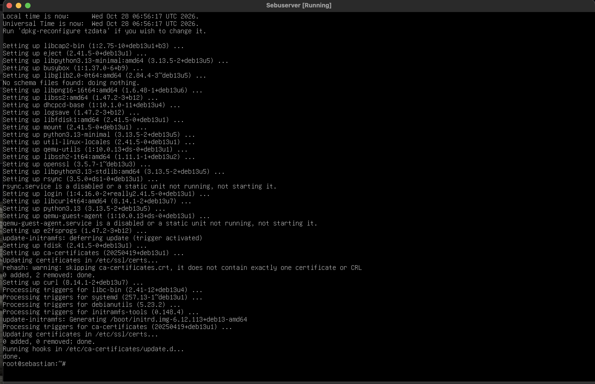
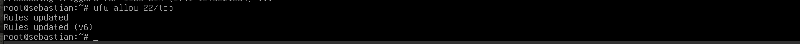
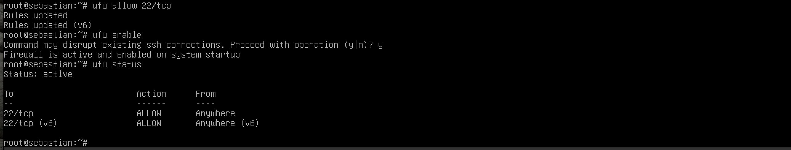
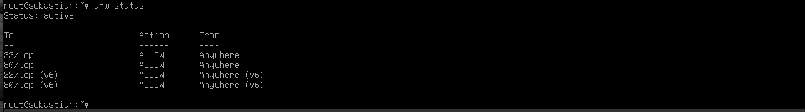
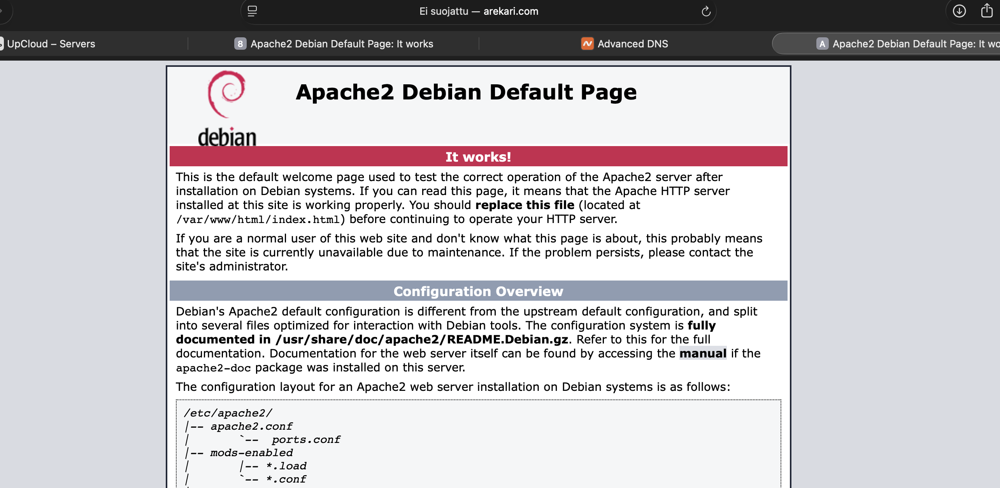

Materiaalissa käsitellään Linux-palvelimen hallintaa ja tietoturvaa. Palvelimen ylläpidossa on tärkeää päivittää ohjelmistot, hallita käyttäjäoikeuksia ja rajoittaa verkkoyhteyksiä palomuurilla. Tarvittavat yhteydet tulee sallia ennen palomuurin käyttöönottoa, jotta etähallinta ei esty.
Harjoituksessa käsitellään verkkotunnuksen yhdistämistä palvelimeen DNS-asetusten avulla. A-tietueella verkkotunnus ohjataan palvelimen IPv4-osoitteeseen. @ tarkoittaa juuriverkkotunnusta, ja www-tietueella voidaan ohjata myös www-alkuinen osoite samaan palvelimeen.
Asensin Debian 13:n paikalliseen virtuaalikoneeseen. Asennuksen jälkeen loin SSH-avainparin komennolla:
ssh-keygen -t ed25519Julkisen avaimen tarkistin komennolla:
cat ~/.ssh/id_ed25519.pubJulkista avainta voidaan käyttää palvelimelle kirjautumiseen. Yksityinen avain pitää säilyttää turvallisesti omalla koneella.

Otin käyttöön UpCloudin virtuaalipalvelimen, jossa käytetään Debiania. Palvelimen julkinen IP-osoite on 81.27.96.102. Palvelimen avulla pystyin julkaisemaan verkkopalvelun internetiin ja testaamaan sitä oman tietokoneeni selaimella.

Päivitin palvelimen pakettitiedot ja ohjelmistot:
sudo apt update
sudo apt upgradeTämän jälkeen sallin SSH-yhteydet UFW-palomuurissa:
sudo ufw allow 22/tcp
sudo ufw enable
sudo ufw statusSSH-portin salliminen ennen palomuurin aktivointia on tärkeää, jotta etäyhteys palvelimelle säilyy. Tarkistin lopuksi, että palomuuri oli aktiivinen ja portti 22 sallittu. Myöhemmin sallin myös HTTP-liikenteen porttiin 80 verkkopalvelinta varten.


Asensin Apache-verkkopalvelimen komennolla:
sudo apt install apache2Sallin HTTP-liikenteen porttiin 80:
sudo ufw allow 80/tcp
sudo ufw statusTestasin palvelimen avaamalla selaimessa osoitteen http://81.27.96.102. Selaimessa näkyi Apachen oletussivu, mikä vahvisti, että verkkopalvelin vastasi pyyntöihin.

Yhdistin verkkotunnuksen arekari.com palvelimen IP-osoitteeseen DNS-asetuksilla. Määritin seuraavat A-tietueet:
| Nimi | IP-osoite |
|---|---|
| @ | 81.27.96.102 |
| www | 81.27.96.102 |
Näin sekä arekari.com että www.arekari.com ohjautuvat samaan palvelimeen.
Testasin verkkotunnuksen selaimessa, ja Apachen oletussivu avautui myös osoitteella arekari.com. Tässä vaiheessa palvelimella oli vielä Apachen oletussivu oman verkkosivun sijaan.

